벤치마킹 한 채널들을 둘러보셨다면 아실 겁니다. 대부분의 건강 채널들은 이런 아바타를 사용하고 있습니다.
이제 우리도 나만의 아바타를 만들어보겠습니다.
1. Google Flow 시작하기
Google Flow 바로가기 →Google Flow에 접속합니다.
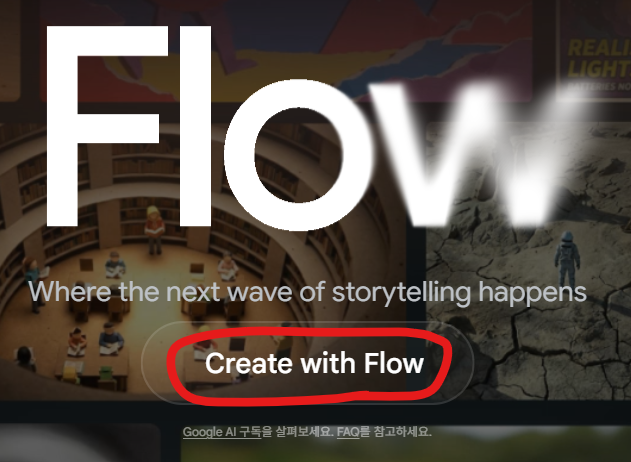
Create with Flow를 클릭합니다. 구글 계정을 선택하라는 창이 뜨면 구글 아이디를 클릭해서 로그인해줍니다.
로그인이 완료되면 새 프로젝트를 클릭합니다.
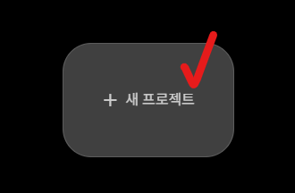
아래와 같은 창이 뜰 것입니다.
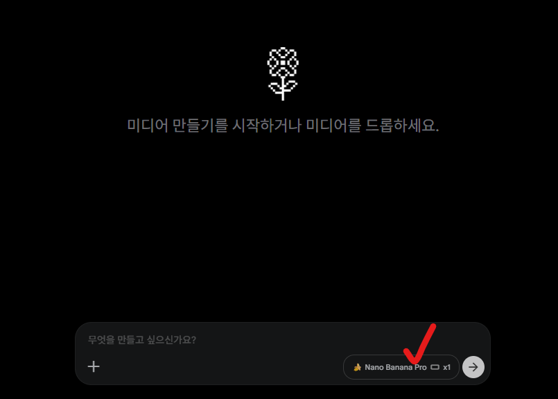
Nano Banana Pro라고 되어있는 칸을 클릭합니다. 아래와 같은 창이 뜨는데, 우리는 이미지를 생성할 것이기 때문에 이미지를 선택하고, 롱폼은 16:9 비율이기 때문에 16:9로 되어있는지 확인합니다. 그리고 x4로 변경해줍니다.
(x1도 상관없습니다. 한 프롬프트에 몇 장을 생성할 것이냐를 설정하는 것입니다.)
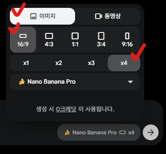
2. 아바타 이미지 만들기
이제 나만의 아바타를 하나 만들어보겠습니다.
"무엇을 만들고 싶으신가요?" 란에 자신이 만들고 싶은, 또는 벤치마킹한 이미지와 비슷하게 만들고 싶은 것을 묘사해서 입력하면 됩니다. 프롬프트를 전문적으로 입력할 필요는 없습니다. 원하는 것을 자연스럽게 한국어로 설명하면 됩니다.
예시를 보여드리겠습니다.
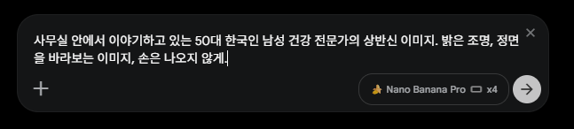
프롬프트를 입력하면 아래와 같이 4가지 이미지가 생성됩니다. 마음에 드는 이미지가 있다면 다운로드하고, 마음에 들지 않는다면 프롬프트를 다시 입력해서 원하는 이미지가 나올 때까지 만들어보세요.
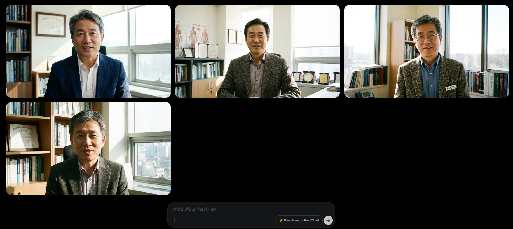
저는 첫 번째 이미지가 마음에 들어서 다운로드하겠습니다. 다운로드는 마음에 드는 사진 위에 마우스를 올려놓고 점 3개 클릭 → 다운로드 → 2K를 선택합니다.
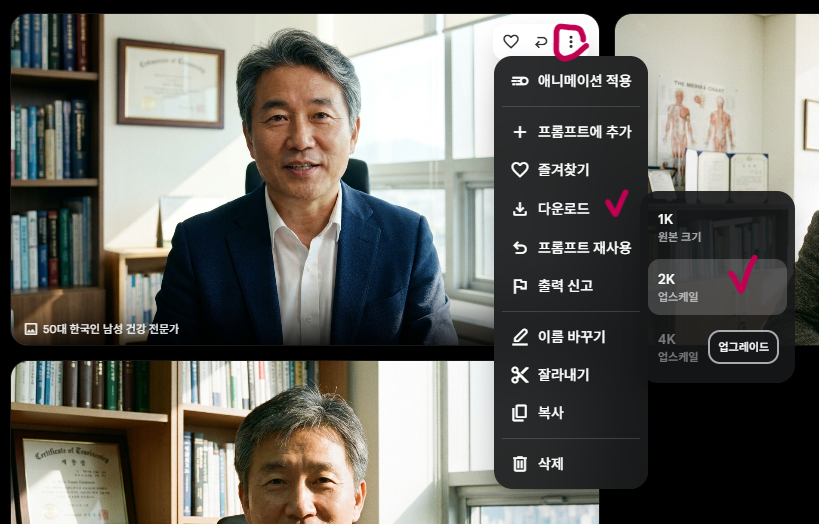
3. 이미지 수정하기
이미지를 만들다 보면 아바타는 마음에 드는데 배경이 마음에 안 들거나, 표정이 어색하거나, 손이 보이는 경우가 있습니다. 이럴 때는 수정할 수 있습니다.
예시로 2번째 이미지의 배경을 수정하고 손과 팔이 안나오게 수정해보겠습니다. 먼저 수정하고 싶은 이미지를 클릭합니다.
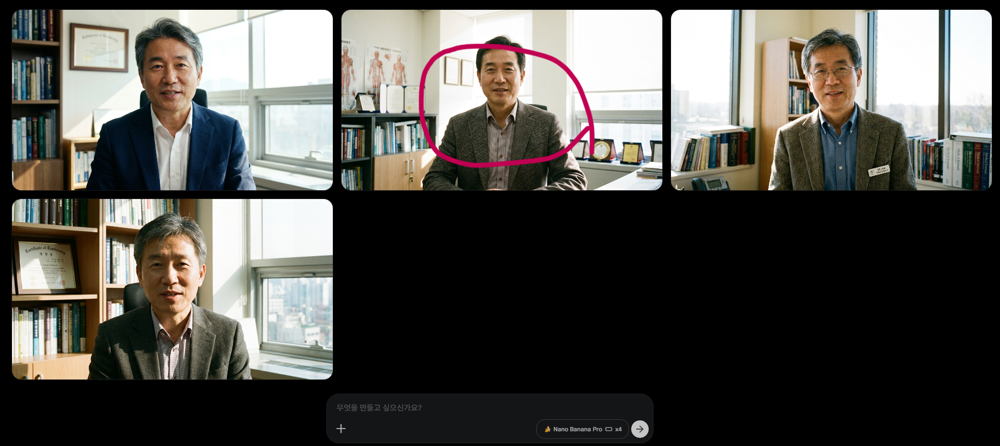
아래 이미지와 같이 수정하고 싶은 부분에 대해 수정해달라고 프롬프트를 작성하고 엔터를 눌러줍니다.
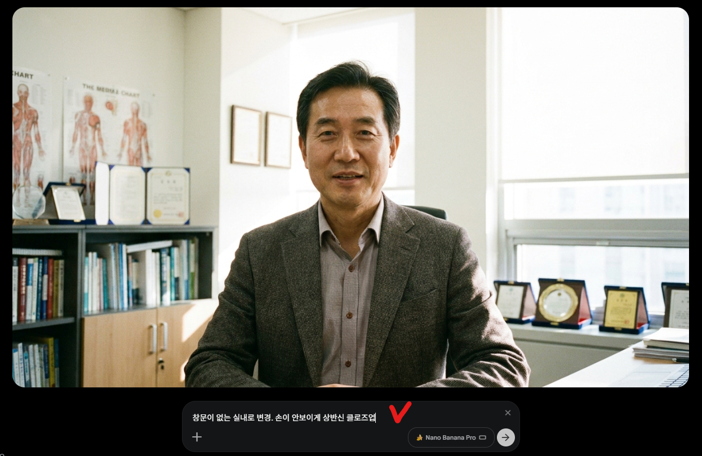
창문이 없어지고 손도 보이지 않게 수정된 이미지를 확인할 수 있습니다.
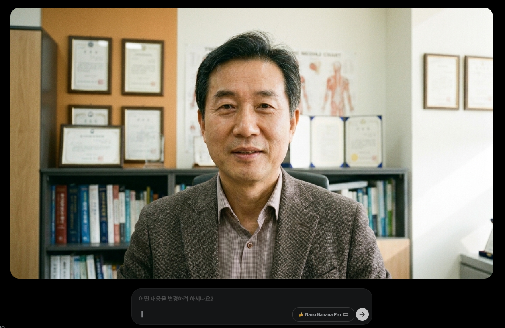
원하는 대로 수정이 되지 않았다면 계속해서 수정해나가면 됩니다. 마음에 들었다면 오른쪽 상단의 다운로드를 눌러서 저장합니다.
4. 후킹 이미지 만들기
떡상하는 영상들을 보면 아바타만 있는 것이 아니라 첫 후킹 부분에 동영상이나 이미지를 넣은 채널들이 있습니다. 이것도 만들고 싶다면 동일한 방법으로 만들 수 있습니다.
예를 들어 첫 후킹 대본이 "최근 수많은 어르신들이 응급실에 실려가고 있습니다" 라는 멘트라면 이렇게 입력해봤습니다.
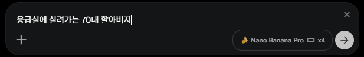
그러면 아래와 같이 이미지 4장이 생성됩니다.
이 이미지를 동영상으로 변환하는 방법은 다음 챕터에서 다루겠습니다. 일단 마음에 드는 이미지를 다운로드해두세요.
후킹 이미지뿐만 아니라 영상 중간에 들어갈 이미지도 동일한 방법으로 만들 수 있습니다. 예를 들어 사과, 딸기, 수박이 대본에 나온다면 해당 이미지를 직접 만들어서 넣을 수도 있습니다.
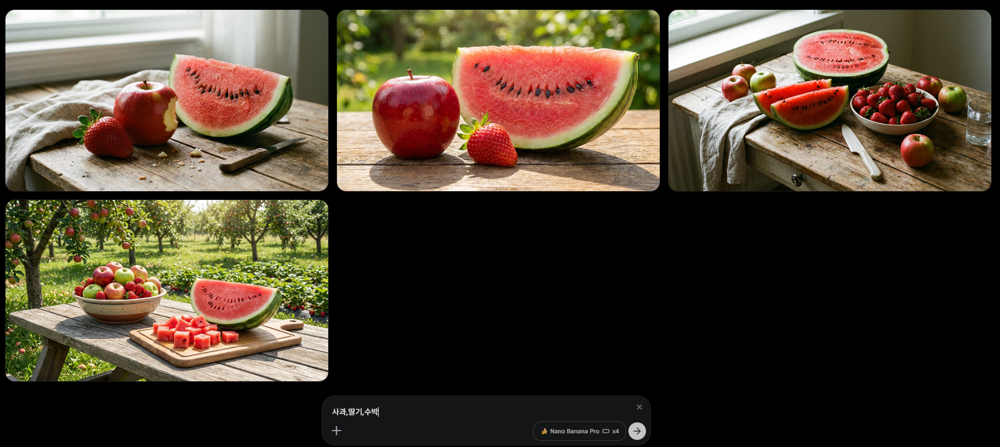